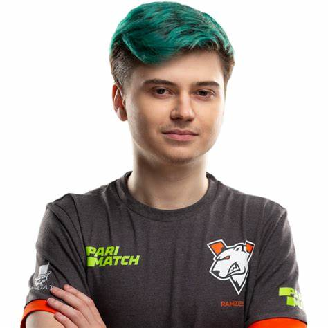
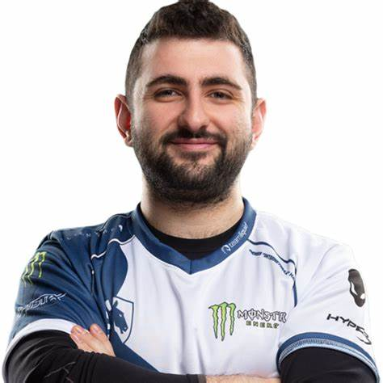
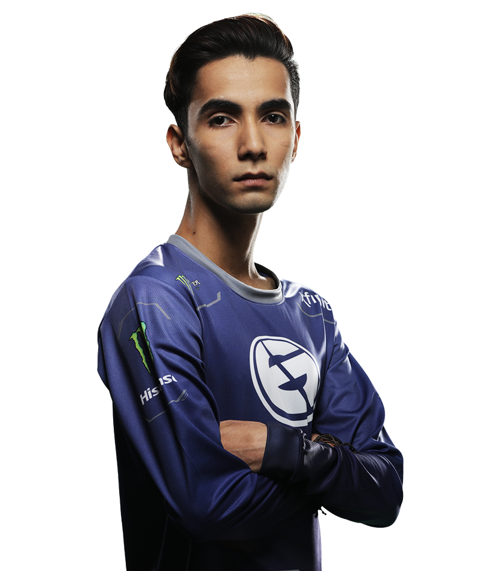

Также известен как: SIXSIXSIX, Ramzes, Ramzes666 Роман Кушнарёв, 25.04.1999 (20 лет) Россия Профессиональный игрок в Dota 2. Начинал своё знакомство с играми, когда учился в пятом классе. Вместе со своими друзьями ходил в компьютерный клуб, где любил играть в Counter-Strike и другие игры, в том числе и в Warcraft 3. После знакомства с Варкрафтом попробовал себя в первой DotA. Игра ему пришлась по душе и с тех пор он посвящает ей всё своё время.
Также известен как: GH-GOD, Gh Марун Мерхей, Ливан Профессиональный игрок в Dota 2 из Ливана. Чемпион Мира 2017 года (в составе Team Liquid). Присоединился к E-LAB в августе 2015 года. Ранее был замечен в Wired Gaming, которые участвовали на MSI Beat IT 2014. Широкую известность получил в конце 2016 года, когда вошел в список игроков, набивших 9000 mmr, и за свою игру в составе Team Liquid, заменяя BuLba почти всю первую половину сезона. Наконец, в январе 2017 год он был окончательно включен в состав "Жидких", где окончательно раскрыл свой талант.
Также известен как: D3m0n, B-Rabbit, Slim.Shady, Suma1L Саид Самаил Хассан, 13.02.1999 (20 лет) Пакистан Профессиональный игрок в Dota 2, Чемпион Мира 2015 года (в составе Evil Geniuses). Саид Самаил Хассан долгое время играл за малоизвестные команды из Северной Америки.. Дебют Suma1L'а состоялся на пятом сезоне D2L, а в феврале он принял участие в турнире Dota 2 Asia Championship 2015, где помог своей команде завоевать первое место и выиграть более $ 1,000,000
